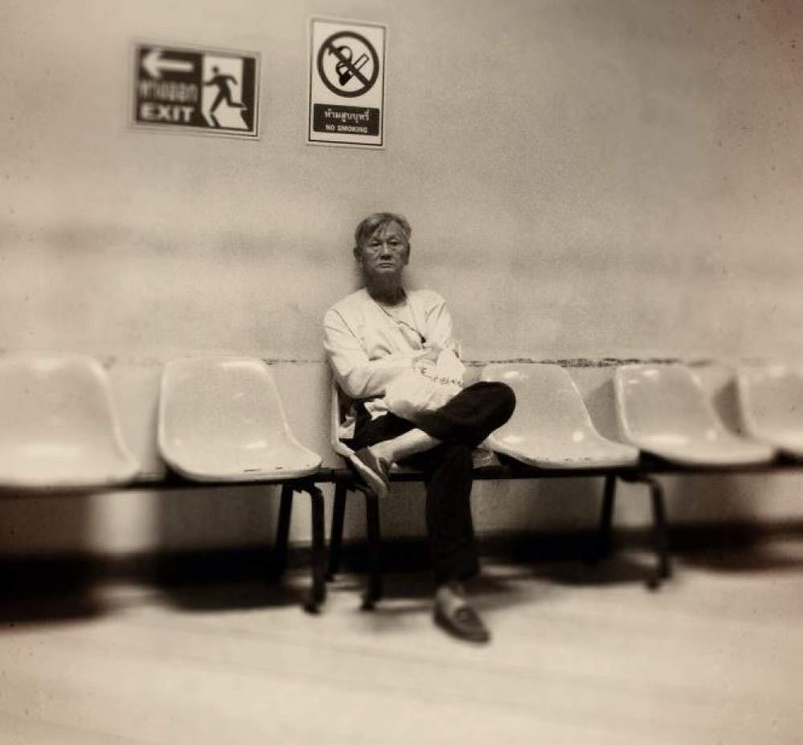

The reason that I’ve given you all these examples is to highlight a normal process. This process plays out for every single one of us. Not being willing to make room for our uncomfortable inner experiences can lead to problems. Unhelpful patterns of behaviour can sometimes take over large parts of our lives. It doesn’t matter whether it’s avoiding social situations, always playing the joker, getting caught up in gossiping about others, sitting around and complaining or continuously scratching mosquito bites. When these behaviours are used too often in our lives, we've fallen into a trap.

We're going to look at this further in the next chapter as we come to explore how the little patterns of our actions don't always form a trap, but often go against the grain of who we really are.
The full version of this app has the complete set of eight guided mindfulness tracks, as well as extra exercises and tools, summaries of the chapters, and a live recordings section of full-length guided meditations. If you are interested, you can purchase the complete version of the app here.